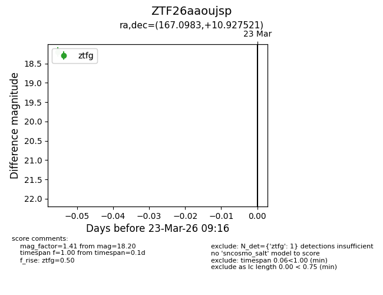
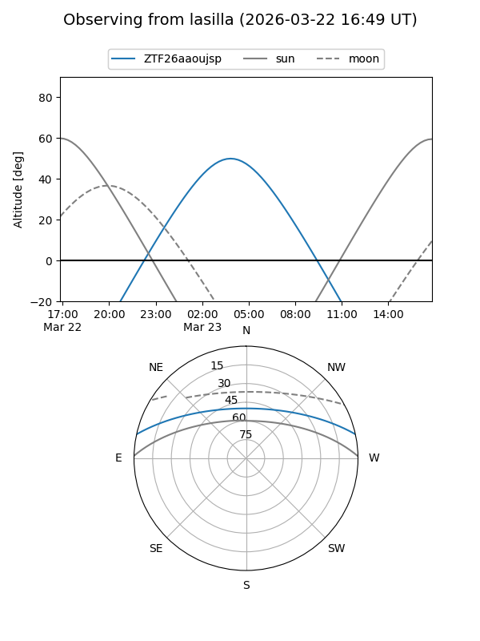
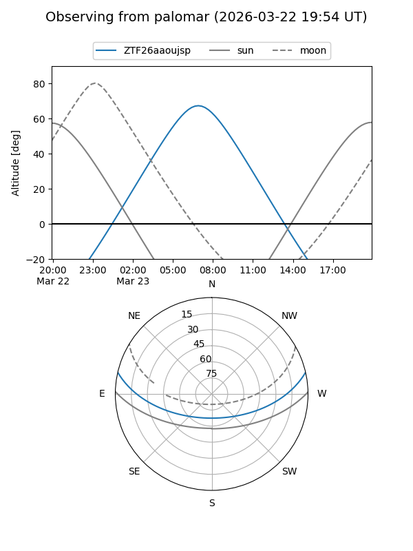

ZTF26aaoujsp
Target ZTF26aaoujsp at 2026-03-23 09:18
Aliases and brokers:
FINK: link
Lasair: link
ALeRCE: link
alt names
ZTF26aaoujsp (ztf,fink_ztf)
Coordinates:
equatorial (ra, dec) = 167.0983,+10.92752
equatorial (HMS+DMS) = 11:08:23.60,+10:55:39.07
galactic (l, b) = (241.7221,+60.86104)
Flags:
Photometry:
last ztfg=18.20
1 ztfg detections
Lightcurve

Visibility


Additional plots